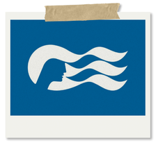
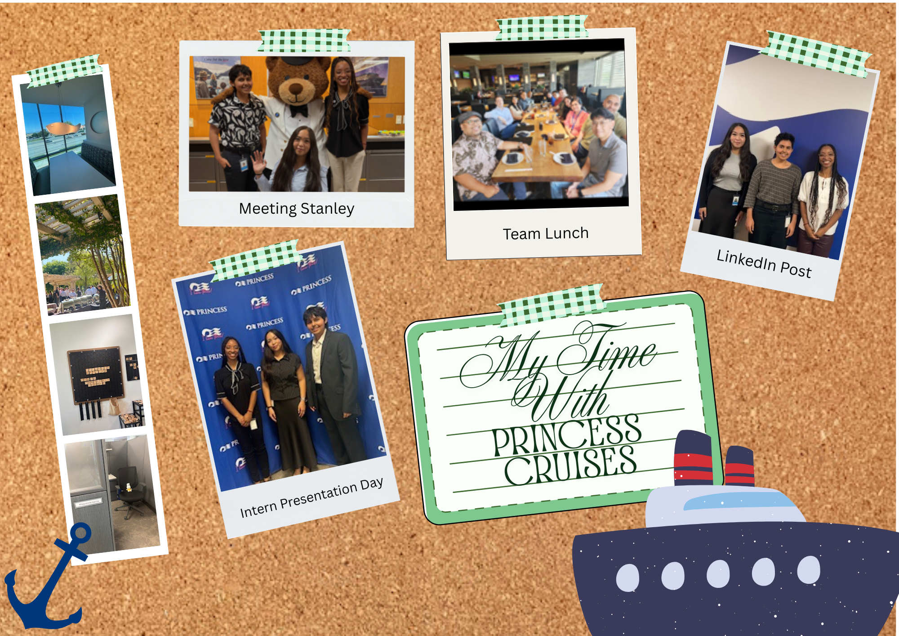

Getting Started with Princess Cruises

I joined Princess Cruises as a business analyst (BA) intern this Summer on their Commerce & Enterprise Engineering (CEE) team. As a BA, I worked with stakeholders to solidify the software requirements for our developers, documented our software products & processes, helped lead standups, and guide internal discussions. Outside of BA work, I was heavily involved in change management, helped out our QA teams, and frequently worked with the DevOps & xOps teams.
As my first in-person internship, I was incredibly nervous to get started. However, I could not ask for a better team to be a part of or better fellow interns. Each of them made my experience with the company as great as it was and I am very grateful to have worked alongside them!
Post-internship, I continue to work with the company as a Jr. BA and have picked up right where I left off!
Internship Project
The Princess Pal
Working alongside two other interns, the three of us were tasked with coming up with a solution to target Gen-Z audiences. The Princess brand mainly targets an older demographic, and so we needed to lean in to the things we thought Gen-Z would enjoy. After conducting research, we found that much of Gen-Z enjoyed videogames and so we created an app that could be played in return for real-world, tangible rewards.
Our team dubbed this app, the Princess Pal. The Princess Pal leaned into existing Princess mascots like Stanley the Bear and McKinley the Moose. We created a tamagotchi style app where users could nuture these characters, earn points, and exchange these points for rewards and discounts on the cruise.
Project Snippets
Work Gallery
Below are some moments with the team, our events, and other photos from around the office!
My Favorite Things About Working With Princess
- The CEE Team
- Each and every one of my colleagues is someone I can look up to. They're brilliant, hard working, and they set an exemplary standard for what it means to be an engineer and a leader. I learn something new from them everyday. I am incredibly thankful to be in a position to learn from such talented individuals.
- Collaboration Across Departments
- As a team who builds enterprise solutions, our stakeholders are primarly other departments within the company. I really enjoy getting to meet other people of different backgrounds- besides engineering- and learn about subjects like finance, operations, etc. There is always room for collaboration and learning about other industries.
- Company Events
- Princess Cruises makes an effort to connect with their employees. There have been a multitude of office events and gatherings! At the very first event I attended, I won a company raffle and got some headphones!